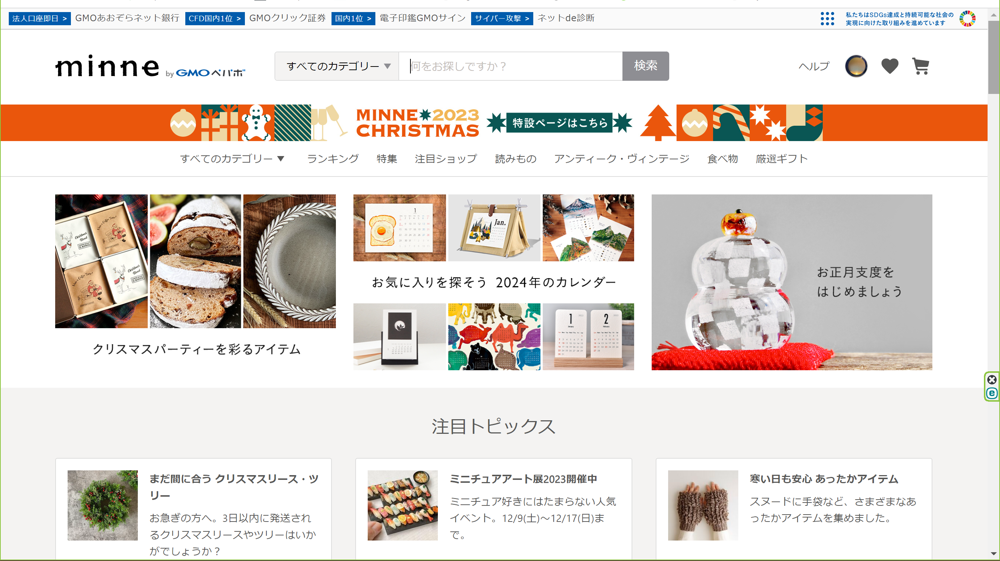
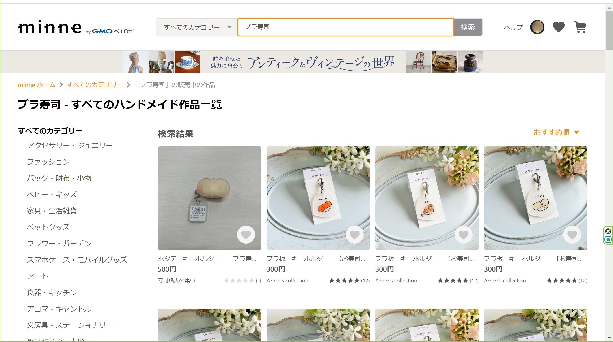
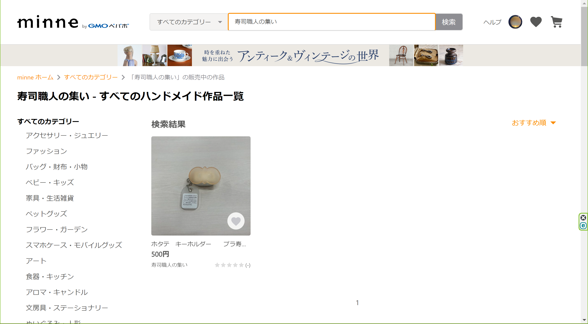
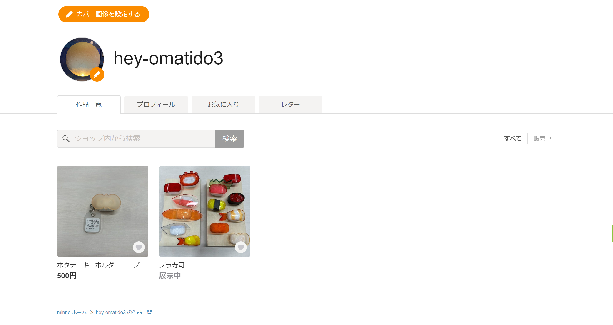

これまでみなとみらい祭でしか販売されていなかったプラ寿司ですが、今回インターネットハンドメイドサイト「minne」で販売します!
minneのリンクこちらのリンクを押していただくか、minneの公式ホームページで「プラ寿司」（※プラはカタカナ）または「寿司職人の集い」（※集いは漢字）と検索していただくと購入できると思います!
検索方法

【ステップ1】minneトップページの上部、検索のところに「プラ寿司」または「寿司職人の集い」と検索する

【ステップ2】「プラ寿司」の検索結果（左）は一番左上のホタテを押し、「寿司職人の集い」の検索結果はそのままホタテを押すと購入できます!
プラ寿司（アカウント名：寿司職人の集い）のアカウントページ

（2023年12月11日）現在はプラ寿司の作品展示、またはホタテのみの販売ですが、これから随時、製造・販売していきたいと思います。